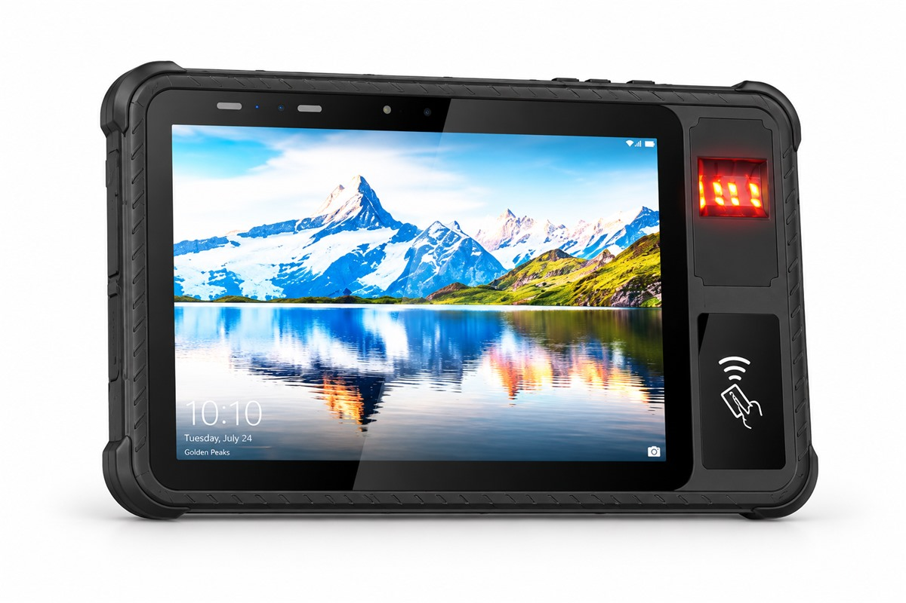

What FAP 10, FAP 20 and FAP 30 Mean on a Fingerprint Tablet
FAP 10, FAP 20 and FAP 30 are all single-finger acquisition profiles. Compare their minimum capture areas, then check the selected module, software and data format against your project requirements.

FAP 10, FAP 20 and FAP 30: minimum capture areas
FAP means Fingerprint Acquisition Profile. The FBI category table lists these three profiles under PIV-071006, each for one flat finger.
| Profile | Simultaneous fingers | Minimum area (inches) | Minimum area (mm) | Pixels at 500 ppi |
|---|---|---|---|---|
| FAP 10 | 1 flat finger | 0.5 × 0.65 | 12.7 × 16.51 | 250 × 325 |
| FAP 20 | 1 flat finger | 0.6 × 0.8 | 15.24 × 20.32 | 300 × 400 |
| FAP 30 | 1 flat finger | 0.8 × 1.0 | 20.32 × 25.4 | 400 × 500 |
Pixel counts above are calculated from the minimum dimensions: inches × 500 pixels per inch. They are reference values, not measured specifications for any Xinhong Smart module. Confirm the selected sensor's actual active area, output image dimensions and SDK settings.
Choose the module around the workflow
For verification at a counter or during a field visit, first establish the receiving system's capture requirements. A larger single-finger area may help your capture workflow, but the FAP number alone does not establish matching accuracy or throughput. Evaluate dry, worn and wet fingers with the intended software and operating conditions.
If enrolment requires two or four fingers in one placement, specify a module designed for that capture mode. FAP 50 and FAP 60 support up to four simultaneous flat fingers; neither capability follows from selecting FAP 30.
The 5-inch XH-100 handheld, 10.1-inch XH-400 tablet and 10.1-inch XH-500 rugged tablet list optional fingerprint modules. Choose the enclosure for how the operator holds, charges and connects the device. Confirm the exact module and mechanical configuration before ordering.
Image quality, data formats and attack detection
FBI image quality: PIV-071006 and Appendix F are distinct image-quality specifications. Certification applies to a tested hardware and software configuration. Check its listing in the FBI Certified Products List.
Fingerprint records: ISO/IEC 19794-2 defines finger minutiae data formats, while ISO/IEC 19794-4 defines finger image data records. Confirm the required edition, encoding and exchange format with your backend team. Image-quality certification does not by itself show that an SDK exports your required record.
Presentation attack detection: ISO/IEC 30107-3 covers testing and reporting of presentation attack detection. An FAP number does not demonstrate liveness detection or attack resistance.
What to confirm before ordering
- Capture mode: one finger at a time, simultaneous flat fingers, or rolled impressions.
- Exact sensor model, active area, output dimensions and sampling configuration.
- Any required certification listing and the hardware, firmware and driver versions it covers.
- SDK platform, template or image format, compression and compatibility with your application.
- Enrolment and matching performance with representative users in the intended environment.
- Template storage, access control and the application rules that authorise a transaction.
Questions we get asked
Is FAP 30 a four-finger scanner?
Does an FAP number prove FBI or ISO compliance?
Which Xinhong Smart models offer fingerprint modules?
Specifying a fingerprint device? Send us the capture workflow, required record format and operating environment. We will review the module configuration and integration requirements with you. See our custom solutions for mechanical and software options.
Related reading: Mobile Voter Registration · Border Identity Verification · Bank Card Issuance Terminals